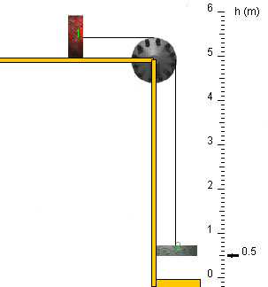

No, the magnitude of the force exerted by the string on block 1 is not greater than the weight of block 2.
One important thing to know is that the tension T in the string is the same on both sides of the pulley, since the pulley is massless and frictionless. This tension is equal to the magnitudes T1 and T2 of the forces exerted by the string on blocks 1 and 2, respectively. Thus, T = T1 = T2.
Now, if T were greater than the weight W2 of block 2, the net force on this block would be directed upward and, by Newton's second law, block 2 would be accelerating upward. That is not what is happening.